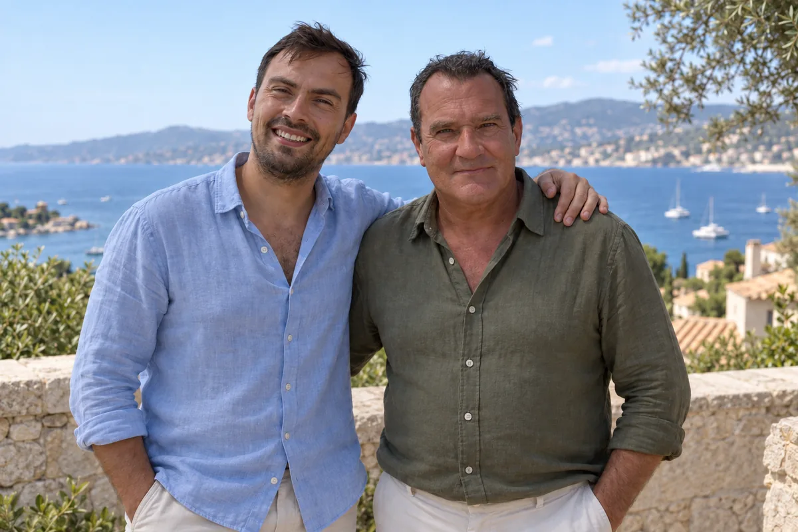

Polskojęzyczne biuro nieruchomości na Lazurowym Wybrzeżu
Sławomir i Michał Skomiał
Od 2018 roku pracujemy w JP Team, francuskiej agencji działającej na Lazurowym Wybrzeżu od 1993 roku.
Sławomir prowadzi wizyty i rozmowy z agencjami we Francji, Michał kontakt z klientami z Polski.
Specjalizujemy się w obsłudze polskich klientów poszukujących nieruchomości w Cannes, Nicei, Antibes i okolicach.
Licencjonowane biuro nieruchomości
Carte professionnelle CPI 83032032021000000022
SIRET 437 566 961 00011
SIRET 437 566 961 00011
Licencja zawodowa wymagana francuskim prawem do pośrednictwa w obrocie nieruchomościami.

 Obejrzyj wywiad o rynku Lazurowego Wybrzeża
Obejrzyj wywiad o rynku Lazurowego Wybrzeża